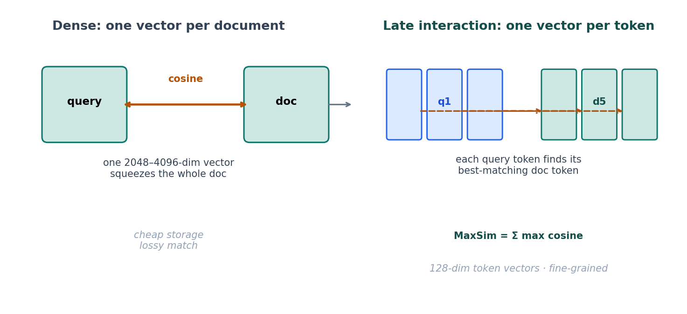
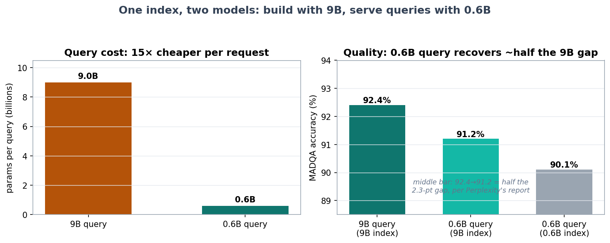
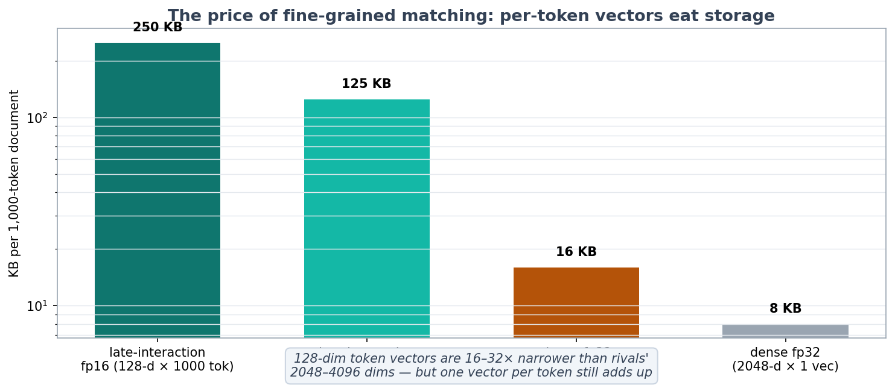

On October 7, Perplexity dropped two embedding models on Hugging Face under an MIT license — and the size gap between them is the whole story. The small one, pplx-embed-v2-late, runs on 0.6 billion parameters and lives on edge hardware. The big one is 9 billion parameters and, paired with Gemini 3.5 Flash as the reader, scores 92.4% on MADQA. Same embedding space, same index — and here's the trick nobody's talking about loudly enough: you build the index with the 9B model and query it with the 0.6B model, paying 0.6B query costs while recovering roughly half the 9B quality gap. Fifteen times fewer parameters per request, most of the quality intact.
This is the late-interaction turn in retrieval. And it's the biggest architectural bet on search since dense embeddings killed BM25.
ELI5: stop summarizing, start remembering
Normal embeddings work like a librarian who reads every book and writes a one-paragraph summary on an index card. Your query gets summarized too, and you compare summaries. Fast, cheap — and lossy. The summary throws away where each fact lived, what it was next to, how it was phrased.
Late interaction is a librarian with a photographic memory. She keeps every word of every book, each in its own slot. When you ask a question, she doesn't compare summaries — she takes each word of your question and hunts for its closest-matching word in each book, then adds up how good those best matches were. That sum is the MaxSim score:
MaxSim(query, doc) = Σ over each query token of (best doc-token match)
Nothing is averaged. Nothing is pre-summarized. The matching happens late — at query time, token by token — which is where "late interaction" gets its name. The cost: instead of one vector per document, you store one 128-dimensional vector per token. That's the trade, and the rest of this post is about whether it pays.

How it works: the three numbers that matter
1. One vector per token, 128 dimensions each. Built on Qwen3.5 with bidirectional attention, each token of a document becomes a 128-dim vector. 128 is deliberately tiny — Perplexity notes it's 16–32x narrower than rival token vectors at 2,048–4,096 dimensions. Narrow dims keep the storage math survivable.
2. MaxSim scoring. Query tokens each take their max cosine similarity over all document tokens; sum them. This is why a PDF table cell containing the exact invoice number can beat a whole page of vaguely relevant prose: the strong per-token matches dominate, instead of being averaged into soup.
3. One shared embedding space across sizes. This is the genuinely new trick. Both models embed into the same 128-dim space, so a query encoded by the 0.6B model can be scored against an index built by the 9B model. The 0.6B is a distillation sibling, not a separate design — both were distilled from an internal 18B ColBERT teacher with a token-level LEAF-style objective (the 0.6B fully fine-tuned; for the 9B, the final 8 transformer layers were fully fine-tuned while the rest got LoRA).
Multimodality comes free in the same space: text, images, and rendered PDF pages are all embedded as token sequences — no OCR, no chunking pipeline. A table in a PDF is kept as an image with its layout intact, not mangled by text extraction.

The economics are the point. Query-side encoding is what you pay for on every request; index-building is what you pay for once. Splitting the two means your serving fleet runs a model small enough for edge hardware — 594M total parameters, 240M for text — while your index carries 9B-quality signal. It's the same logic as speculative decoding from yesterday's post: spend the big model's budget where it's cheapest, the small model's where it matters.
SOTA: where this lands in October 2026
The benchmark line (all Perplexity-reported, no independent verification yet, no technical report):
- MADQA — 92.4% with the 9B model + Gemini 3.5 Flash. MADQA is 500 questions over ~18,000 PDF pages — multi-page, document-heavy QA. The 0.6B model hits 90.1% in the same setup, vs 88.9% for the Mixedbread retriever. So the 0.6B is only 2.3 points behind its 15x-bigger sibling on the headline test.
- Q2D-Web — 74.8% Recall@1000 across ~190 million documents. This is the web-scale test, and it's arguably the more important number than MADQA.
- BrowseComp+ — 64.0% paired with GPT-OSS-120B, 4.9 points ahead of competing ColBERT models (per AlphaSignal's writeup).
The weak spots — and Perplexity's own cards admit them:
- ViDoRe v3 image retrieval — 65.2%, markdown — 61.2%. "Retrieves text, images, and PDFs" does not mean uniformly strong. Tencent's EVIE scores higher on image retrieval. If your corpus is markdown-rendered docs, benchmark before you believe the headline.
- No mixed text+image input in a single query. One modality per input — a real limitation for "find the chart that shows X" workflows.
- One vector per token is a storage bill. The math: a 1,000-token document costs 250 KB at fp16 vs 16 KB for a dense 4096-dim vector. Int8 halves it. The 128-dim choice is doing real work here — at 4,096 dims, late interaction would be dead on arrival.


Context of the week: this landed one day after Google's EmbeddingGemma 2 — a 740M open dense multimodal embedder aimed at on-device use. The two releases frame the fork clearly: Google is betting small-and-dense for the edge, Perplexity is betting small-and-fine-grained, with the shared-space trick as the bridge to big-model quality. The right bet depends on whether your queries need token-level precision (invoice numbers, legal clauses, code) or just semantic nearness.
The production reality check
- Cross-model querying is the killer feature, not MADQA. The headline 92.4% is nice; the ability to run a 594M-parameter query encoder against a 9B-quality index is what changes serving budgets. If your retrieval traffic is the expensive part, this is the number to model.
- The OCR-free pitch is real but bounded. Native image/PDF embedding preserves tables and layouts that text-extraction pipelines corrupt — genuinely valuable. But the ViDoRe numbers say the vision side is still the weaker half. Verify on your own documents.
- Distillation lineage matters. An 18B teacher with a token-level objective, LoRA on most of the 9B — this is a carefully distilled family, not two independent models. That's why the shared space works. Don't expect to mix-and-match arbitrary small/large embedders and get the same effect.
- Storage is the new latency. Late interaction moves the cost from compute to storage. At 250 KB per 1k-token doc, a 190M-document index is ~47 TB at fp16 before quantization. Fine for a hyperscaler; a budget line for everyone else.
- MIT license, self-host only (for now). No hosted API yet — sentence-transformers ≥ 6.0.0, transformers ≥ 5.4.0, CUDA confirmed. A hosted endpoint is planned. If you want this behind an API, you're waiting or self-hosting.
Takeaways
- Late interaction beats single vectors where precision matters. One vector per token + MaxSim means the best-matching fact wins instead of being averaged away. Mean pooling is the enemy of exactness.
- Build with the big model, serve with the small one. The shared embedding space splits the one-time index cost from the per-request query cost. 15x cheaper queries, ~half the quality gap recovered.
- 128 dimensions is a design decision, not a spec. Narrow token vectors are what make per-token storage affordable. The dimensionality is the product decision.
- Multimodal retrieval without OCR is here — mostly. PDF tables and layouts survive natively, but vision retrieval still trails; Tencent EVIE and the ViDoRe weak spots are the honest footnotes.
- This is infrastructure for agents. Every agentic loop that grounds itself in documents — RAG, tool-use over PDFs, research agents — gets better the moment retrieval stops summarizing and starts remembering.
All benchmark figures are Perplexity self-reported (announced Oct 7, 2026 via the company blog and forum); the technical report is not yet published and no independent verification exists at the time of writing. Treat the 92.4% MADQA headline as a signal, and the shared-space / storage math as the substance.